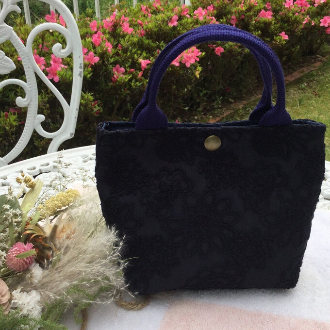

-
詳細介紹
-
規格
這款深藍色刺繡手工包包以其精湛的手工工藝和獨特的設計著稱。它採用高品質布料製成，質感柔軟，觸感舒適。每個包包都經過細心的手工刺繡，呈現出精美的花卉、動物等圖案，使其成為一件獨一無二的藝術品。
這個包包的尺寸適中，長度為30厘米，寬度為20厘米，高度為10厘米，提供足夠的空間來容納您的必需品，如手機、錢包、化妝品等。它擁有主要的收納間隔，方便整理和存放物品，同時還配有小型拉鍊口袋和側邊或後面口袋，提供額外的收納空間，讓您可以輕鬆有序地組織您的物品。
這款包包的設計簡約而時尚，深藍色的外觀散發出一種優雅和高貴的氛圍。無論是日常使用還是特殊場合，它都能為您的造型增添亮點。您可以使用手提式手柄輕鬆攜帶它，或者使用可調節和可拆卸的肩帶將其斜挎或背在肩上，根據需要進行自由變換。
這款深藍色刺繡手工包包是品味和時尚的完美結合，適合各種場合和搭配。不僅可以作為日常手提包或購物包使用，還能成為派對或特殊場合的時尚配飾，為您的整體造型增添魅力和個性。
請注意，由於每個包包都是手工製作的，圖案和細節可能會略有不同，使每個包包都獨一無二。請在購買前仔細查看產品資訊，以確保您對該款深藍色刺繡手工包包有充分的了解。
- 尺寸
- 長度: 25cm
- 寬度: 15cm
- 高度: 10cm
- 材質
- 外部材料: 高品質織物
- 刺繡: 精緻刺繡工藝
- 設計特點
- 深藍色設計，經典且時尚
- 華麗的花紋和細節刺繡
- 簡約實用的設計
- 拉鍊或磁扣開合方式
- 內部結構
- 主要收納間隔，可放置手機、錢包、化妝品等物品
- 小型拉鍊口袋，方便存放小物件
- 側邊或後面口袋，增加收納空間
- 用途
- 日常手提包
- 購物包
- 派對或特殊場合的時尚配飾